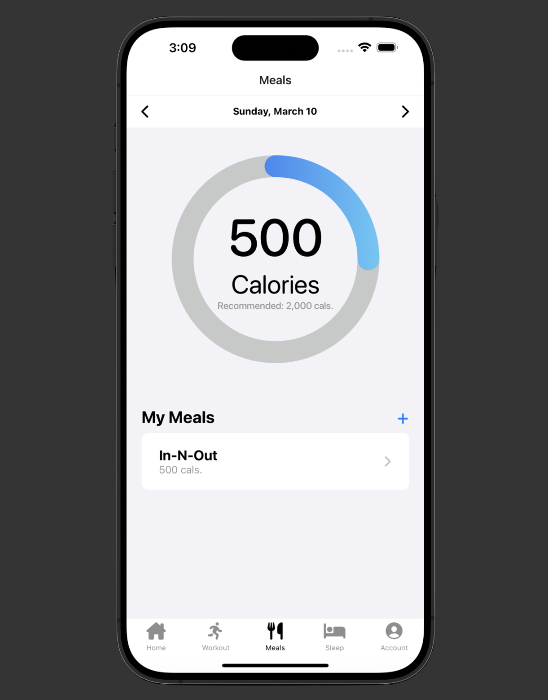
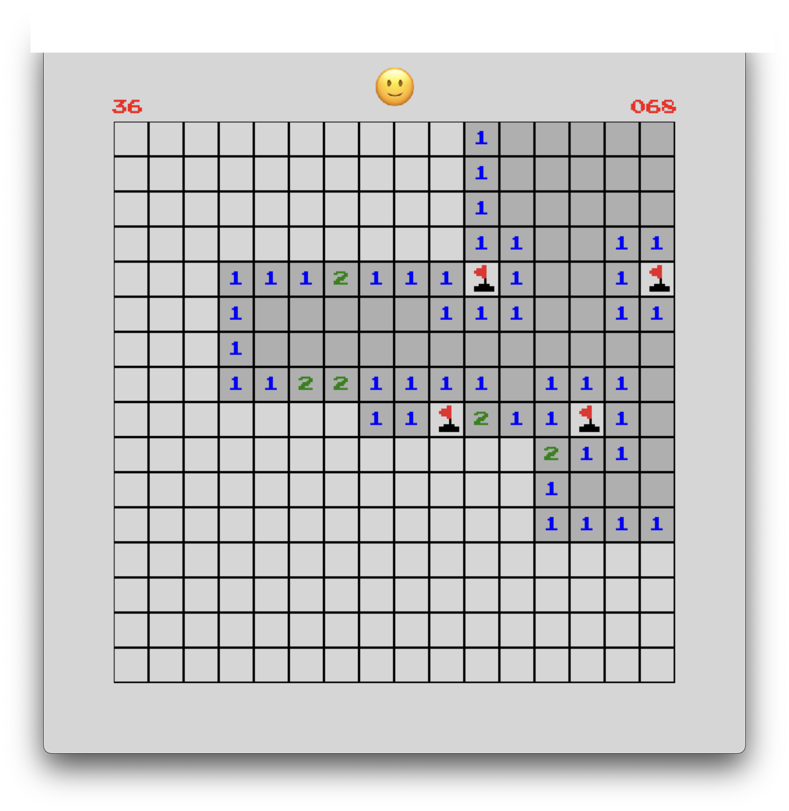
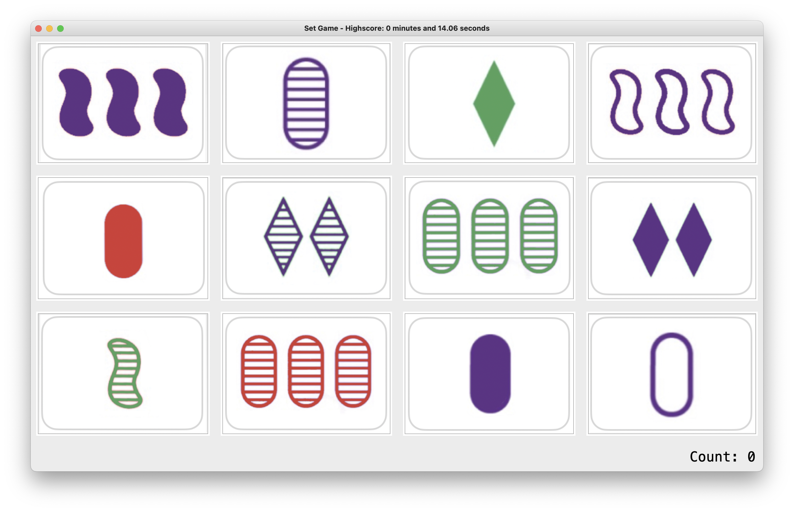

About Me
My name is Zachary Katz and I am currently a first-year MSCS student at the University of California, Irvine. I am currently working as a Teaching Assistant for ICS 32: Programming with Software Libraries taught by Professor Mohammad Moshirpour. I received my BS in Computer Science from UCI in March 2024.
Work Experience
Graduate Teaching Assistant (September 2024 - Present)
Donald Bren School of Information and Computer Science
- Courses: Algorithms (Fall 2024), Concurrent Programming (Fall 2024), Programming with Software Libraries (Winter 2025).
- Assist in instruction and aided students with diverse backgrounds in writing programs in Java and Python.
- Design programming assignments and assist in curriculum planning.
- Assess students’ understanding in concepts through live demonstrations.
- Designed and coordinated a LeetCode Workshop attended by students new to the field of computer science.
Undergraduate Research Assistant (October 2023 - March 2024)
Donald Bren School of Information and Computer Science
- Worked in Professor Brian Demsky’s lab to explore the software development capabilities of large language models, namely ChatGPT4.
- Leveraged Python and OpenAI API calls to write tools capable of implementing software and assessing the effectiveness of the output.
- Experimented with prompt engineering and multiple LLM agents to optimize code output based on correctness and efficiency.
Projects
ZotFitness

Cross-platform mobile application that allows users to chronicle their workout plans, meals, and sleep schedule and get personalized recommendations.
TypeScript, React Native, Firebase
Minesweeper

Recreation of Minesweeper game using Pygame. Integrates a Minesweeper solver AI capable of solving 83% of 16 x 16 boards with 40 mines.
Python, Pygame
SET® Puzzle

Recreation of SET® Puzzle with Tkinter.
Python, Tkinter